含最新儀器測量的訂製枕／床墊諮詢（60分鐘）
透過先進 3D 掃描系統「N3D-body」，可視化全身骨架與姿勢歪斜狀態。

西川自1566年創業以來，持續守護日本人的舒適睡眠。融合傳統工藝與最前沿的睡眠科學，為每一位顧客提供最適合的睡眠環境。 通過西川嚴格考核的睡眠專家「Sleep Master」，以及具備日本睡眠科學知識的門市人員，將傾聽您的煩惱，協助您挑選理想寢具。
預約來店顧客限定
※數量有限，送完為止。
地址：台北市XX區XXXX路XX號 Google Map
營業時間：XX:XX ～ XX:XX
公休日：全年無休（年底年初除外）
電話：XX-XXXX-XXXX
交通方式：自 MRT「XXX站」XX號出口步行約X分鐘
加入 LINE 好友，接收優惠活動邀請
加入好友